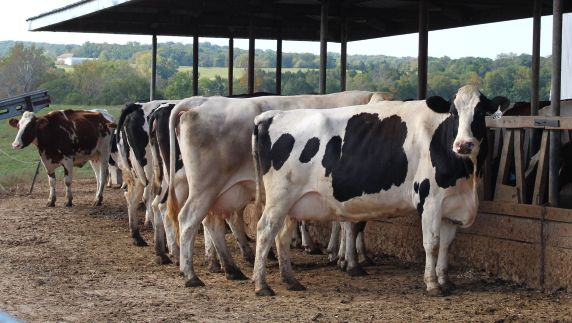
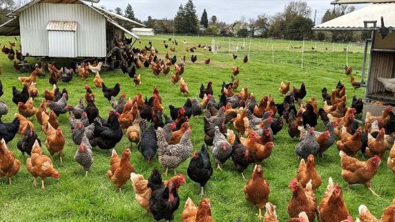
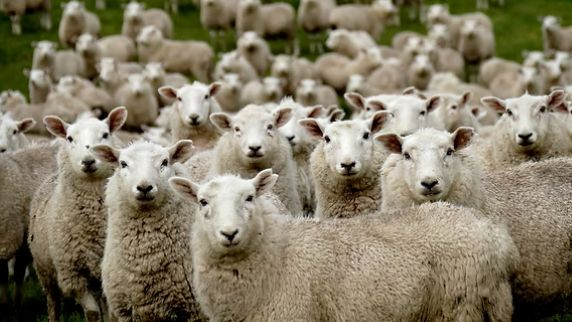
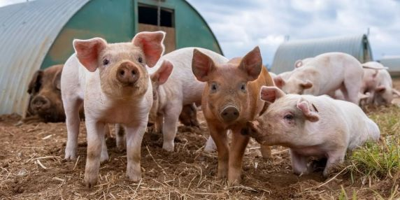

Animals in Agriculture




Chickens are the most populous bird in the world, with an estimated global population of 22 to 30 billion, making them the most widely raised livestock animal.
China has the largest sheep population in the world, with around 175 to 190 million sheep raised mainly to meet demand for meat, wool, and milk.